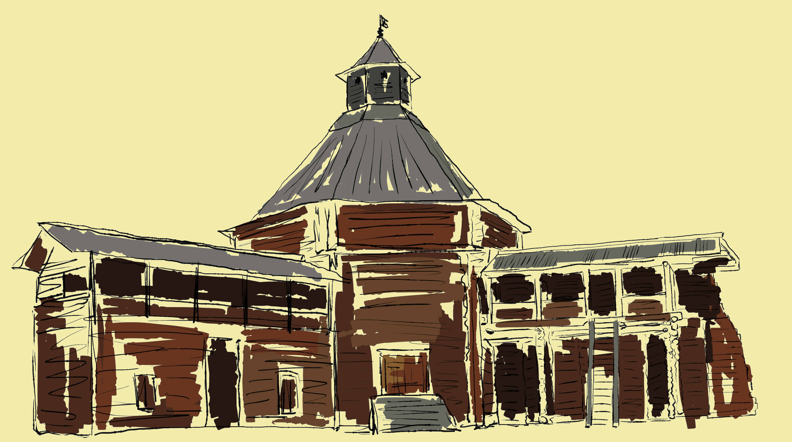
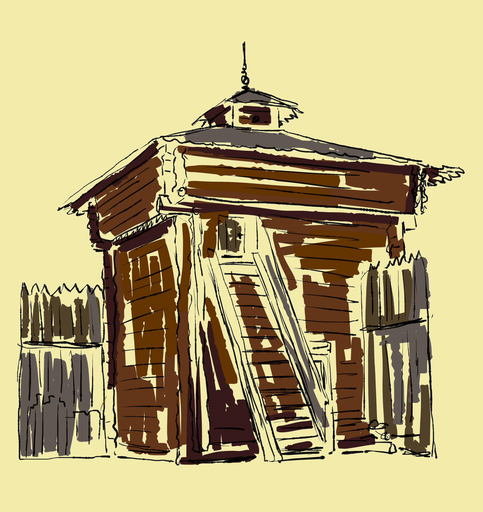
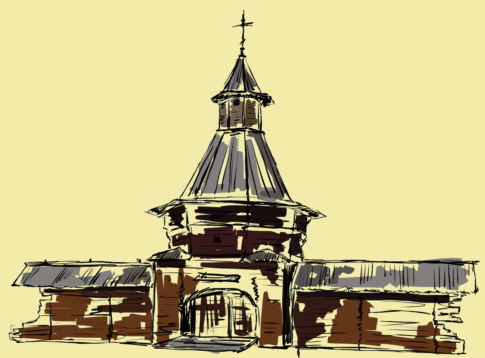

6. БАШНЯ БРАТСКОГО ОСТРОГА – ЭТО УНИКАЛЬНЫЙ ПАМЯТНИК ВОЕННОЙ
АРХИТЕКТУРЫ XVII ВЕКА.
СТРОЕНИЕ, СОЗДАННОЕ В СИБИРИ БОЛЕЕ 300 ЛЕТ
ТОМУ НАЗАД, БЫЛО ПРИВЕЗЕНО В КОЛОМЕНСКОЕ
В 1959 ГОДУ. СЕЙЧАС ЭТО ЭКСПОНАТ МУЗЕЯ ПОД ОТКРЫТЫМ НЕБОМ, ГДЕ СОБРАНЫ СТАРИННЫЕ ДЕРЕВЯННЫЕ
ПОСТРОЙКИ ИЗ МНОГИХ УГОЛКОВ СТРАНЫ.
БРАТСКИЙ ОСТРОГ БЫЛ ОСНОВАН В 1631 ГОДУ НА РЕКЕ АНГАРЕ РУССКИМ ЗЕМЛЕПРОХОДЦЕМ, КАЗАЧЬИМ АТАМАНОМ МАКСИМОМ ПЕРФИЛЬЕВЫМ. ВМЕСТЕ С СУРГУТСКИМИ КАЗАКАМИ ПАРФИЛЬЕВ ТАКЖЕ ПОСТРОИЛ ЕНИСЕЙСКИЙ ОСТРОГ. НО СТРОИТЕЛЬСТВО БРАТСКОГО ОСТРОГА ВЫЗВАЛО НЕДОВОЛЬСТВО БУРЯТСКИХ КНЯЗЬКОВ, КОТОРЫЕ НАЧАЛИ ВОЕННЫЕ ДЕЙСТВИЯ. В РЕЗУЛЬТАТЕ ЛЕТОМ 1635 ГОДА ОСТРОГ БЫЛ СОЖЖЕН.
КРЕПОСТЬ ИМЕЛА ФОРМУ ПРЯМОУГОЛЬНИКА, СТЕНЫ ДОСТИГАЛИ ВЫСОТЫ 5 МЕТРОВ, А ПЕРИМЕТР - 213 МЕТРОВ. ЧЕТЫРЕ КВАДРАТНЫЕ В ПЛАНЕ БАШНИ ВЫСОТОЙ ОКОЛО ВОСЬМИ МЕТРОВ БЫЛИ ГЛУХИМИ. ТРИ ИЗ НИХ СЛУЖИЛИ ИЗБАМИ, А ПОД ЧЕТВЕРТОЙ БЫЛ УСТРОЕН СКЛАД. ДЕРЕВЯННАЯ КРЕПОСТЬ К НАЧАЛУ XVIII ВЕКА УТРАТИЛА СВОЕ ВОЕННОЕ НАЗНАЧЕНИЕ. ЗДЕСЬ СЕЛЯТСЯ КРЕСТЬЯНЕ, РАЗВИВАЕТСЯ СЕЛЬСКОЕ ХОЗЯЙСТВО И КУЗНЕЧНЫЙ ПРОМЫСЕЛ, ПЛОТНИЦКОЕ ДЕЛО И ДЕРЕВООБРАБОТКА. ЧЕРЕЗ БРАТСКУЮ ВОЛОСТЬ ПРОХОДИЛО МНОЖЕСТВО ТОРГОВЫХ КАРАВАНОВ, ПОЭТОМУ В СЕЛЕНИИ ПОЯВЛЯЕТСЯ ТАМОЖНЯ И СУДОВЕРФЬ.
В СОВЕТСКОЕ ВРЕМЯ ИЗ ВСЕХ БАШЕН БРАТСКОГО ОСТРОГА СОХРАНИЛИСЬ ЛИШЬ ДВЕ – СЕВЕРО-ЗАПАДНАЯ И ЮГО-ЗАПАДНАЯ. ВО ВРЕМЯ СООРУЖЕНИЯ БРАТСКОЙ ГЭС ВЫЯСНИЛОСЬ, ЧТО ЗЕМЛИ, ГДЕ РАНЕЕ НАХОДИЛСЯ ОСТРОГ, ПОПАДАЛИ ПОД ЗАТОПЛЕНИЕ. ЧТОБЫ СОХРАНИТЬ УНИКАЛЬНЫЕ ПАМЯТНИКИ, БЫЛО РЕШЕНО ИХ ВЫВЕЗТИ ИЗ ЗОНЫ СТРОИТЕЛЬСТВА ГЭС. ЮГО-ЗАПАДНУЮ БАШНЮ ПЕРЕНЕСЛИ В ПОСЕЛОК ПАДУН. СЕЙЧАС ОНА НАХОДИТСЯ В АРХИТЕКТУРНО-ЭТНОГРАФИЧЕСКОМ МУЗЕЕ «АНГАРСКАЯ ДЕРЕВНЯ» ПОД ГОРОДОМ БРАТСКОМ, СЕВЕРО-ЗАПАДНУЮ БАШНЮ МЫ МОЖЕМ ВИДЕТЬ В МУЗЕЕ-ЗАПОВЕДНИКЕ КОЛОМЕНСКОЕ.
 7. НА ЭКСПОЗИЦИИ“МОХОВАЯ БАШНЯ СУМСКОГО ОСТРОГА” ПОСЕТИТЕЛИ МОГУТ ПОГРУЗИТЬСЯ В ЭПОХУ XVII ВЕКА, В ЖИЗНЬ ПОМОРСКОЙ ПОГРАНИЧНОЙ КРЕПОСТИ: НАПРАВЛЯЮЩИЕ ЛУЧИ СВЕТО-ВИДЕО-ЗВУКОВОЙ ИНСТАЛЛЯЦИИ УКАЗЫВАЮТ НА ЭКСПОНАТЫ; ЗВУКИ СТРЕЛЬБЫ ПУШЕК, ШУМ СЕВЕРНЫХ ЛЕСОВ И МУЗЫКА СОЗДАЮТ ОСОБОЕ НАСТРОЕНИЕ. НА БРЕВЕНЧАТОЙ СТЕНЕ ВОЗНИКАЮТ ПРИЗРАЧНЫЕ ТЕНИ СТРЕЛЬЦОВ.
НА ПЕРВОМ ЯРУСЕ БАШНИ РАСПОЛОЖЕН РАЗДЕЛ ЭКСПОЗИЦИИ, РАССКАЗЫВАЮЩИЙ О БЫТЕ ВОЕННЫХ СЛУЖИЛЫХ ЛЮДЕЙ, ОХРАНЯВШИХ ОСТРОГ. ЗДЕСЬ ПРЕДСТАВЛЕНЫ ПРЕДМЕТЫ, СВЯЗАННЫЕ С ХОЗЯЙСТВЕННЫМИ ЗАНЯТИЯМИ ОБИТАТЕЛЕЙ КРЕПОСТИ, ВОСПРОИЗВЕДЕН ИНТЕРЬЕР КРАСНОГО УГЛА.РАЗДЕЛ ЭКСПОЗИЦИИ, РАЗМЕЩЕННЫЙ ВО ВТОРОМ ЯРУСЕ БАШНИ, ПОСВЯЩЕН ПОКАЗУ ВОЕННОЙ ИСТОРИИ КРЕПОСТИ. ЗДЕСЬ ПРЕДСТАВЛЕНЫ ДОКУМЕНТЫ ПО ИСТОРИИ СУМСКОГО ОСТРОГА, ОДЕЖДА ПРОСТЫХ СТРЕЛЬЦОВ И СТРЕЛЕЦКИХ ПЯТИДЕСЯТНИКОВ, СШИТАЯ ПО АНАЛОГАМ XVII ВЕКА, ВОЕННОЕ СНАРЯЖЕНИЕ, ОРУЖИЕ, ВЫПОЛНЕННОЕ ПО АНАЛОГАМ XVII И МНОГОЕ ДРУГОЕ. В ВЕРХНЕМ, ТРЕТЬЕМ ЯРУСЕ БАШНИ, ТАМ, ГДЕ ОБЫЧНО РАСПОЛАГАЛИСЬ КАРАУЛЬНИ, ПРЕДСТАВЛЕН РАЗДЕЛ ЭКСПОЗИЦИИ, РАССКАЗЫВАЮЩИЙ О СИСТЕМЕ ОБОРОНЫ РУССКОГО СЕВЕРА.
 8. ПО ПРЕДАНИЮ, НИКОЛО-КОРЕЛЬСКИЙ МОНАСТЫРЬ БЫЛ ОСНОВАН ПРЕПОДОБНЫМ ЕВФИМИЕМ КОРЕЛЬСКИМ НА РУБЕЖЕ XIV–XV ВЕКОВ. ОН НАХОДИЛСЯ В УСТЬЕ СЕВЕРНОЙ ДВИНЫ ВБЛИЗИ БЕЛОГО МОРЯ. НИКОЛО-КАРЕЛЬСКИЙ МОНАСТЫРЬ БЫЛ ОСНОВАН В КОНЦЕ XIV – НАЧАЛЕ XV ВЕКА В ДВУХ КИЛОМЕТРАХ ОТ БЕЛОГО МОРЯ, В УСТЬЕ РЕКИ СЕВЕРНАЯ ДВИНА.
В 1692 ГОДУ ВОКРУГ ОБИТЕЛИ БЫЛА ПОСТРОЕНА БРЕВЕНЧАТАЯ ОГРАДА С СЕМЬЮ БАШНЯМИ. ПОЖАР, СЛУЧИВШИЙСЯ В 1798 ГОДУ, РАЗРУШИЛ БОЛЬШИНСТВО МОНАСТЫРСКИХ ПОСТРОЕК, УЦЕЛЕЛА ЛИШЬ ЕГО ЗАПАДНАЯ БАШНЯ СО СВЯТЫМИ ВОРОТАМИ.
ТЕРРИТОРИЯ КАРЕЛО-НИКОЛЬСКОГО МОНАСТЫРЯ ИСПОЛЬЗОВАЛАСЬ КАК МОРСКОЙ ПОРТ, ТО ЕСТЬ СЛУЖИЛА МОРСКИМИ ВОРОТАМИ РУССКОГО ГОСУДАРСТВА. В 1930-Е ГОДЫ ЗДЕСЬ НАЧИНАЕТСЯ СТРОИТЕЛЬСТВО ОБОРОННОГО ПРЕДПРИЯТИЯ ПО ВЫПУСКУ ВОЕННЫХ КОРАБЛЕЙ. В СВЯЗИ С ЭТИМ В 1932 ГОДУ БЫЛО РЕШЕНО ПЕРЕВЕЗТИ БАШНЮ ВМЕСТЕ С ЧАСТЬЮ БРЕВЕНЧАТЫХ СТЕН В КОЛОМЕНСКОЕ. В 2007 ГОДУ БАШНЯ БЫЛА РАЗОБРАНА, ОТРЕСТАВРИРОВАНА И ПЕРЕВЕЗЕНА НА НОВОЕ МЕСТО. ВСЕ ПЛОТНИЧНЫЕ РАБОТЫ ПО РЕСТАВРАЦИИ ПРОЕЗДНОЙ БАШНИ НИКОЛО-КОРЕЛЬСКОГО МОНАСТЫРЯ ВЫПОЛНЯЛИСЬ ПО ИСТОРИЧЕСКОЙ ПЛОТНИЧНОЙ ТЕХНОЛОГИИ XVII–XVIII ВЕКОВ, В ЧАСТНОСТИ ПРИМЕНЯЛИСЬ ИНСТРУМЕНТЫ, ИЗГОТОВЛЕННЫЕ ПО ОБРАЗЦАМ ВРЕМЕНИ ПОСТРОЙКИ БАШНИ.